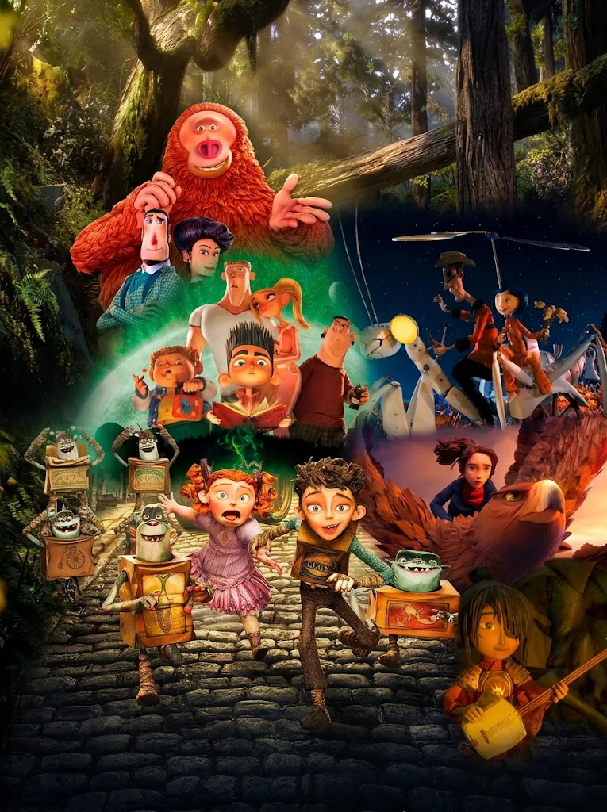
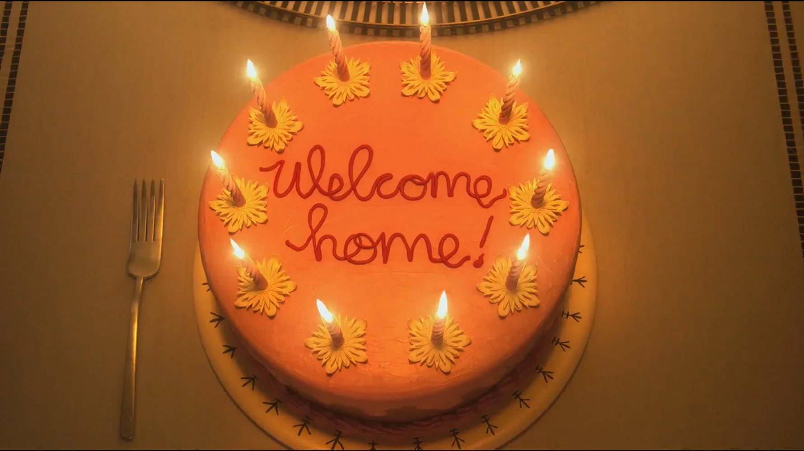
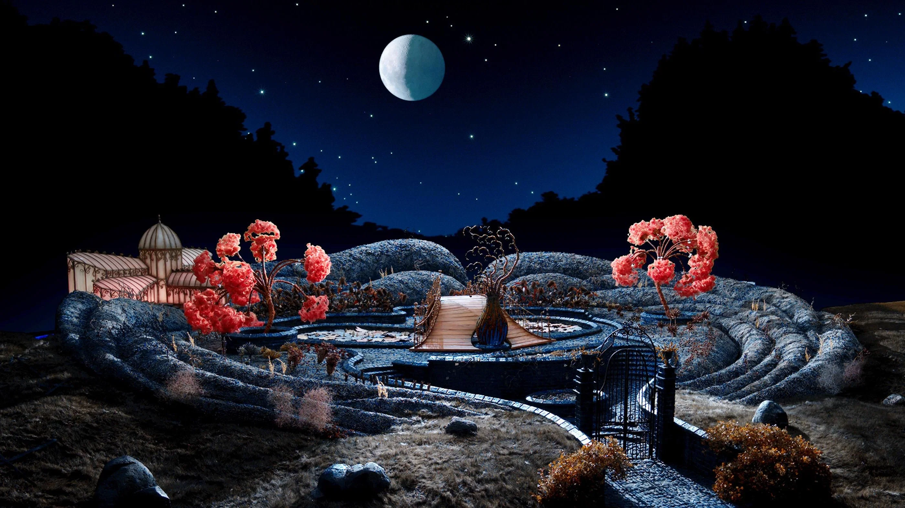
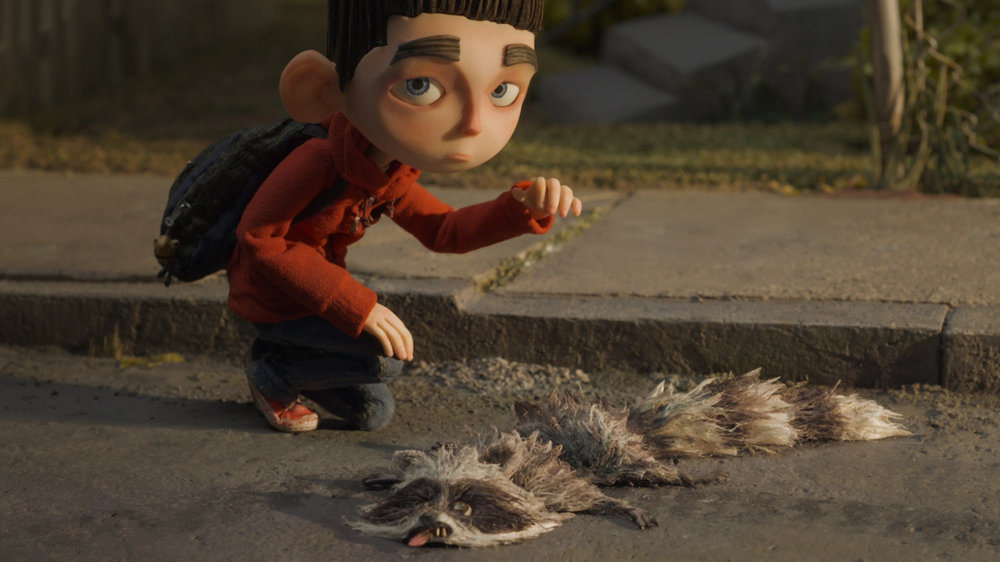
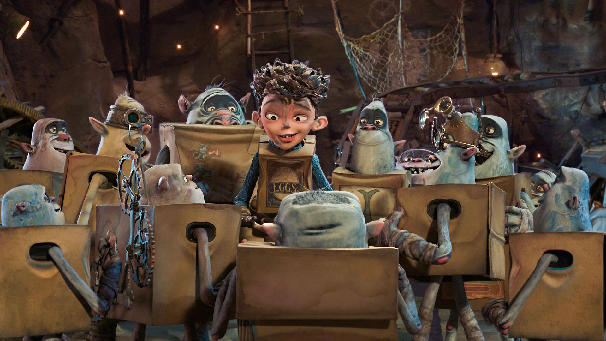
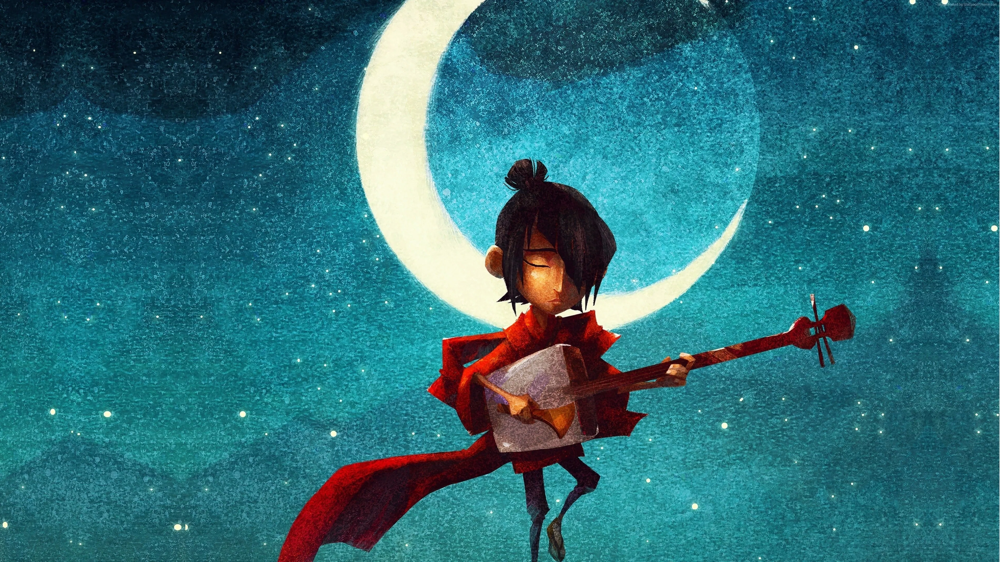
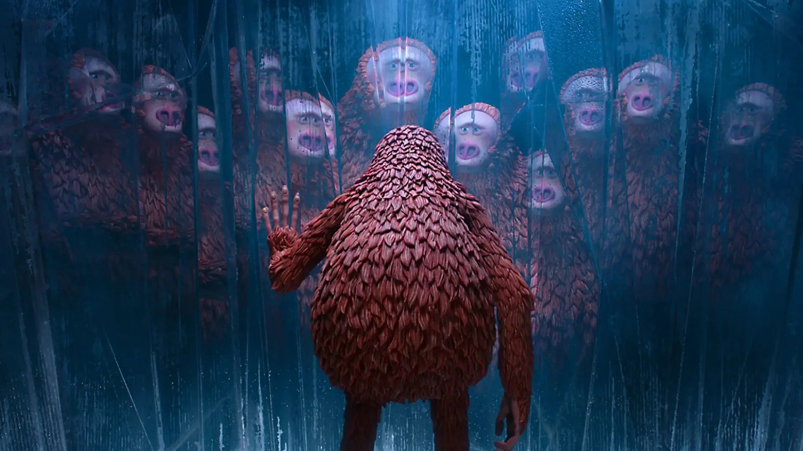
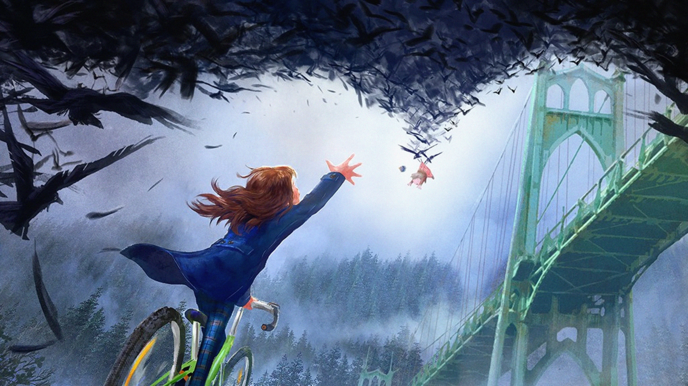

¿Puede competir con la animación por computadora un estudio que lo fabrica todo a mano? LAIKA, fundada en 2005 en Hillsboro, Oregón, lleva dos décadas intentándolo (Laika, LLC, 2026). Para responder, esta edición cruza lecturas muy distintas: la voz del propio estudio (LAIKA, s.f.; Business Wire, 2026b), la prensa de negocios (Fortune, 2026), el periodismo cultural (Coyle, 2026) y la investigación tecnológica (Fraunhofer IGD, 2020).

LAIKA no publica una misión oficial: se describe como un estudio de películas nacidas de la imaginación y hechas por artistas (LAIKA, s.f.). Esta revista propone:
Cada segundo de película son 24 fotografías de marionetas que se mueven apenas un poco entre toma y toma (Fraunhofer IGD, 2020).

Su decisión más famosa fue tecnológica: imprimir en 3D las caras de los personajes en lugar de esculpirlas (3DPrint.com, 2016).

LAIKA usa su fama para formar talento, abrir puertas a estudiantes y cuidar el ambiente.
“La forma en que trabajamos importa tanto como el trabajo que creamos”, David Burke, LAIKA (Business Wire, 2026b).

Modelo de “fábrica integrada”: todo se produce bajo un techo en Hillsboro y los socios llevan las películas al mundo.

Empresa privada y familiar: los dueños son Phil y Travis Knight. Toda la producción depende del CEO, que además dirige películas (Fortune, 2026).
LAIKA mezcla herramientas del siglo XXI con una técnica de hace más de cien años: esa combinación es su ventaja competitiva.
LAIKA es privada y no publica precios ni estados financieros (Fortune, 2026). Sus ingresos vienen de:
Regla práctica: una película debe recaudar ≈ 2.5 veces su presupuesto para recuperar la inversión (Fortune, 2026).

El caso LAIKA confirma que un emprendimiento creativo necesita a la vez identidad, innovación y números claros:
Para un estudiante emprendedor, la lección es medir cada proyecto antes de invertir, como hicimos con la regla de 2.5 veces, y recordar que, igual que en VersaFlex, una buena idea necesita un modelo de negocio que la sostenga.
| Película | Año | Presup.* | Taquilla* | Logro |
|---|---|---|---|---|
| Coraline | 2009 | 60 | 124.6 + 51 | Nom. Óscar |
| ParaNorman | 2012 | 60 | 107.1 | Nom. Óscar |
| The Boxtrolls | 2014 | 60 | 108.3 | Nom. Óscar |
| Kubo | 2016 | 60 | 77.5 | BAFTA |
| Missing Link | 2019 | 100 | 26.2 | Globo de Oro |
| Wildwood | 2026 | ≈100 | en cartelera | Estreno |
*Millones de USD, aproximados; +51 = reestreno de 2024 (Laika, LLC, 2026; Business Wire, 2024; Fortune, 2026).
Cinco preguntas sobre LAIKA para repasar esta edición.
El sitio oficial de LAIKA y sus comunicados de prensa en Business Wire aportan la descripción de la empresa, sus premios, su certificación como Empresa B y las alianzas de distribución de Wildwood (LAIKA, s.f.; Business Wire, 2026a, 2026b).
Es una fuente directa, pero interesada: por eso la contrastamos con prensa independiente.
Fortune (2026) analiza cómo se financia el estudio y por qué casi ninguna de sus películas ha recuperado la inversión en cines. Willamette Week (2026) informa la taquilla de Wildwood y Wikipedia reúne presupuestos y recaudaciones históricas (Laika, LLC, 2026).
El Instituto Fraunhofer IGD (2020) explica cómo su software Cuttlefish permitió imprimir más de 106,000 caras a color, y 3DPrint.com (2016) documenta el premio técnico de la Academia por la impresión 3D en stop-motion.
Fuentes de universidades, organizaciones ambientales y periodismo cultural (Animation World Network, 2024; Environmental Media Association, 2026; Coyle, 2026) muestran el impacto de LAIKA fuera de la pantalla.
Compra derechos de libros o crea historias propias. Adquirió Wildwood en 2011, semanas después de publicarse la novela (Wildwood, 2026), y desarrolla Piranesi y The Night Gardener (Fortune, 2026).
Usa capital propio de la familia Knight; no depende de un gran estudio de Hollywood (Fortune, 2026).
Fabrica todo en su estudio de Hillsboro: marionetas, sets, caras impresas en 3D, rodaje y efectos. Desde 2014 se dedica solo a largometrajes, tras separar su división de comerciales (Laika, LLC, 2026), y desde 2023 tiene una división de imagen real (Fortune, 2026).
No tiene distribuidora propia. Focus Features llevó sus cuatro primeras películas; United Artists, Missing Link; y Fathom y FilmNation, Wildwood (Business Wire, 2026a).
Cada escena se construye en miniatura, a escala de las marionetas. Los sets deben ser firmes: cualquier movimiento accidental entre fotos se nota en pantalla.
Por dentro tienen un esqueleto metálico articulado (armadura) que sostiene cada pose; por fuera, silicona, tela y cabello hechos a mano.
En lugar de mover la cara, se cambia por otra con un gesto un poco distinto. Para Coraline se imprimieron 6,333 piezas que, combinadas, daban unas 207,000 expresiones (3DPrint.com, 2016).
Una cámara digital toma una foto por cada pequeño movimiento. A 24 fotos por segundo, un minuto de película requiere 1,440 fotografías.
La luz debe ser idéntica durante días de rodaje de una misma escena; si cambia, la imagen “parpadea”.
El animador compara cada foto con las anteriores en la computadora. Luego, efectos visuales borra soportes y une las caras divididas.
5 · Capital paciente. LAIKA anunció Wildwood en 2011 y la estrenó en 2026; pocas empresas pueden esperar tanto (Fortune, 2026).
6 · Prestigio no es rentabilidad. Missing Link ganó el Globo de Oro, pero recaudó cerca de $26 millones con un presupuesto de unos $100 millones (Laika, LLC, 2026).
En junio de 2026 LAIKA obtuvo la certificación de B Lab, que exige cumplir estándares sociales, ambientales, de rendición de cuentas y transparencia, y tomar en cuenta a empleados, comunidad, clientes, proveedores y ambiente, no solo a los dueños (Business Wire, 2026b).
Ese mismo año fue reconocida entre los empleadores más saludables de Oregón por el Portland Business Journal.
En 2024 LAIKA donó $60,000 a la fundación de PCC para promover la equidad en las artes, junto con pasantías y revisión de portafolios para estudiantes de multimedia (Animation World Network, 2024).
En 2024 se alió con PSU, la universidad donde estudió Travis Knight, con becas para estudiantes y apoyo a docentes, para formar talento creativo local (Animation Magazine, 2024).
En 2021 ayudó a crear el primer estudio de stop-motion en una universidad históricamente afroamericana, con un camino de pasantías para sus estudiantes (Business Wire, 2021).
Fue el primer estudio de stop-motion con el Sello Verde nivel oro de la Environmental Media Association. Mide sus emisiones, prepara un plan de descarbonización y tiene un huerto comunitario desde 2024 (Environmental Media Association, 2026).
Reportó 362 empleados en 2020 (Laika, LLC, 2026) y ofrece beneficios, desarrollo profesional y comités dirigidos por empleados (Business Wire, 2026b).
Sus retos impulsan a proveedores de tecnología: el instituto alemán Fraunhofer IGD y la empresa Stratasys desarrollaron con LAIKA la impresión de caras a todo color (Fraunhofer IGD, 2020).
Dueño e inversionista principal; presidente de la junta (Fortune, 2026).
Presidente y CEO; además dirige y produce películas como Kubo y Wildwood.
Director de Marketing y Operaciones; ha sido vocero del reestreno de Coraline y de la certificación como Empresa B (Business Wire, 2024, 2026b).
Departamentos de historia, diseño, marionetas, prototipado rápido, sets, animación, cámara, iluminación y efectos visuales.
Exejecutivo de Netflix que dirige desde 2023 la división de imagen real; prepara la serie Exit Party con Emma Stone (Fortune, 2026).
Impresora 3D PolyJet que imprime a todo color y con varios materiales a la vez. Con ella se hicieron las caras de Missing Link (Fraunhofer IGD, 2020).
Software del Instituto Fraunhofer IGD (Alemania) que controla la impresora para reproducir colores y texturas con precisión (Fraunhofer IGD, 2020).
Esqueletos metálicos con articulaciones dentro de cada marioneta, para que mantenga la pose exacta durante la foto.
Amplían escenarios y limpian las imágenes; además, sus reestrenos se proyectan remasterizados en 3D (Business Wire, 2024).
De cada boleto, una parte se la quedan los cines y otra la distribuidora; además hay que pagar la promoción. Por eso se usa la referencia de 2.5 veces el presupuesto (Fortune, 2026).
Luego llegan otros ingresos: streaming, ventas internacionales, reestrenos y productos como el libro The Art of Wildwood y el álbum Wildwood Sessions (Business Wire, 2026b).